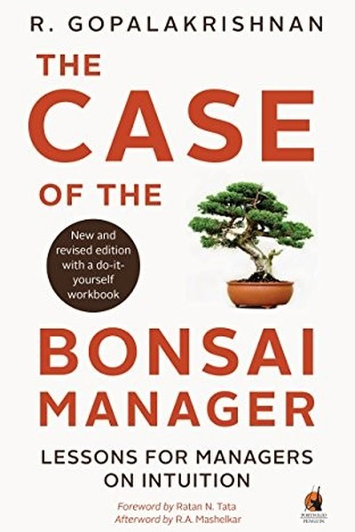

Library › Business & Startups
The Case of the Bonsai Manager — Summary & Key Lessons

Why Indian managers stay small — and how to grow.
📖 OPEN THE FULL INTERACTIVE BREAKDOWN →🌐 Read it in Hindi, Hinglish, Gujarati, Tamil & 22 more languages — free, with audio.
💡 The Big Idea
R. Gopalakrishnan — a veteran of Hindustan Lever and Tata — uses the bonsai metaphor for Indian management: most Indian managers are 'bonsai' — carefully pruned, constrained, and shaped small by the environment, never allowed to grow to their natural size. Through short, case-style chapters drawn from real Indian corporate life, he diagnoses why: over-controlling bosses, risk aversion, respect for hierarchy that becomes fear, and an education system that rewards conformity. His prescription: grow like a banyan, not a bonsai — develop judgment, take calibrated risks, question authority respectfully, and let your roots spread. The book is a mirror for every Indian professional who feels 'smaller than their potential'.
🧠 The 6 Key Lessons
Lesson 1: The Bonsai Syndrome: How Indian Managers Get Pruned Small
Part 1: The Diagnosis
Gopalakrishnan's core metaphor: a bonsai tree is not a different species — it is a normal tree whose growth has been deliberately constrained by its pot, its wire and its pruner. Similarly, Indian managers aren't less capable; they're systematically pruned by hierarchy, permission-culture and risk-aversion. The signs of bonsai management: waiting for instructions, avoiding disagreement with seniors, treating 'no' as final, and measuring success by obedience rather than outcomes. The diagnosis is liberating: if you feel small, it may not be your nature — it may be your environment. The first step to growth is recognizing the pot you're in.
📖 Example: Gopalakrishnan describes the manager who never questions the boss's decision even when data contradicts it — because the culture punishes dissent. The tree has been wired; it's not that it can't grow, it's that it learned not to try. Read the full example →
⚡ Do this: Identify one way you've been 'pruned' — a question you stopped asking, a risk you stopped taking, an opinion you stopped voicing. Reclaim it this week with one small, safe act.
Lesson 2: The Permission Trap: Why Indians Ask Before They Act
Part 2: The Culture
Gopalakrishnan traces the permission habit to family, school and colonial inheritance: 'ask before you act' is drilled so deeply that Indian professionals often seek approval for things that are clearly within their authority. The cost is enormous — speed, initiative and ownership all die in the waiting room. His prescription: expand the boundary of what you decide without asking, and let results be your defence. The manager who acts, reports and takes responsibility for the outcome grows; the manager who waits for permission becomes invisible. Permission is a habit, and habits can be unlearned.
📖 Example: Gopalakrishnan recounts how the most effective executives he knew made a habit of acting first and informing later — and how the ones who survived and thrived were those whose judgment justified the habit. The permission-free zone was earned by results. Read the full example →
⚡ Do this: List three decisions you currently escalate that you could decide yourself. Take one this week — decide, act, and report the outcome rather than asking first.
Lesson 3: Hierarchy Is a Tool, Not a God
Part 3: The Organization
Indian organizations often treat hierarchy with a reverence that confuses respect with fear. Gopalakrishnan's correction: hierarchy is a coordination tool — useful for clarity, disastrous when it becomes a proxy for truth. In healthy organizations, a junior's data can overrule a senior's opinion; in bonsai organizations, the senior's opinion overrules everything, and the organization's errors compound silently. The fix is not revolution but a culture of respectful candour: disagree with evidence, in private and then in public, and make it safe for juniors to speak truth. The leader who invites contradiction builds a company that can see itself clearly.
📖 Example: Gopalakrishnan describes meetings where the most junior person's inconvenient data was dismissed — and the project later failed exactly as the data predicted. The hierarchy didn't prevent the failure; it delayed the learning. Read the full example →
⚡ Do this: In your next meeting, if you disagree with a senior, say so — with evidence, respectfully, once. If the culture punishes it, that's your data about the organization.
Lesson 4: Risk-Aversion: The Quiet Tax on Indian Ambition
Part 4: The Mindset
Gopalakrishnan identifies risk-aversion as the invisible tax on Indian careers and companies: the fear of failure, of shame, of 'what will people say' — leading to a culture where not trying is safer than trying and failing. His prescription is calibrated risk: not recklessness, but the deliberate practice of taking small, reversible risks regularly — the new task, the public proposal, the unfamiliar assignment. Each small risk builds the risk muscle, and the compound effect is a career of growth instead of a career of safety. The tragedy of the bonsai is not that it avoids risk — it's that it forgot it could grow.
📖 Example: Gopalakrishnan tells of professionals who spent decades perfecting their current role while their risk-taking juniors leapfrogged past them — not because the juniors were smarter, but because they tried more things. Read the full example →
⚡ Do this: Take one small, reversible risk this week: volunteer for the unfamiliar task, propose the idea, make the cold call. Log what you learn, win or lose.
Lesson 5: The Case Method: Learn From Real Situations, Not Just Textbooks
Part 5: The Learning
The book's format is itself the lesson: Gopalakrishnan presents real cases and asks the reader to think, not memorize. His critique of Indian professional education: it teaches answers, not judgment. The remedy is the case habit — study real situations, ask 'what would I do?', and compare with what actually happened. Judgment is built by repeated exposure to decisions, not by reading about them. Every professional should run a personal case library: the deals, projects and conflicts they've observed, analyzed and learned from. The person with a rich case library makes better decisions because they've already lived the patterns — virtually.
📖 Example: Gopalakrishnan devotes each chapter to a slice of real corporate India — a takeover, a product failure, a succession fight — and shows how the pattern in each one recurs across industries and decades. The reader who studies the cases gains years of… Read the full example →
⚡ Do this: Start your personal case journal: after every significant project or conflict, write one page — what happened, what was decided, what it teaches. Review it quarterly.
Lesson 6: From Bonsai to Banyan: Grow Roots in Many Soils
Part 6: The Transformation
The book's closing vision: the banyan tree — which spreads multiple trunks and roots across a wide area — is the opposite of the bonsai. Gopalakrishnan's prescription for the growing professional: diversify your experience (multiple functions, industries, geographies), build networks that aren't just vertical (peers, juniors, outsiders), and let your identity be bigger than your job title. The banyan manager survives shocks because their strength is distributed. The transformation from bonsai to banyan is not a promotion — it's a re-rooting: more soil, more trunks, more shade for others. Grow wide before you grow tall.
📖 Example: Gopalakrishnan contrasts the manager whose entire identity is 'the boss's favourite' with the one who has deep credibility across functions and levels — the second survives every regime change, because the banyan doesn't depend on a single trunk. Read the full example →
⚡ Do this: Plant one new 'root' this month: a skill outside your function, a relationship outside your hierarchy, or an experiment in a new area. Banyans grow one root at a time.
✅ 5-Step Action Plan
- Reclaim one 'pruned' behaviour — ask the question you stopped asking.
- Decide and act on one item you normally escalate.
- Disagree with evidence once this week, respectfully.
- Take one small reversible risk and log the lesson.
- Start your personal case journal and plant one new root.
💬 Best Quotes from The Case of the Bonsai Manager
- “The bonsai is not a different species — it is a tree that was pruned.”
- “Permission is a habit, and habits can be unlearned.”
- “Hierarchy is a coordination tool — not a proxy for truth.”
Interactive version: mark lessons as read, listen in your language, share quote cards.